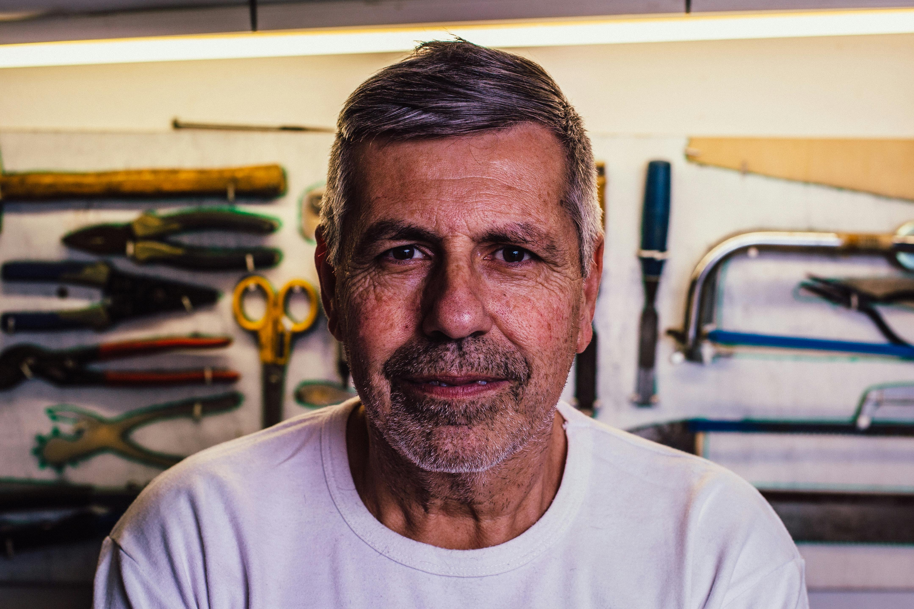
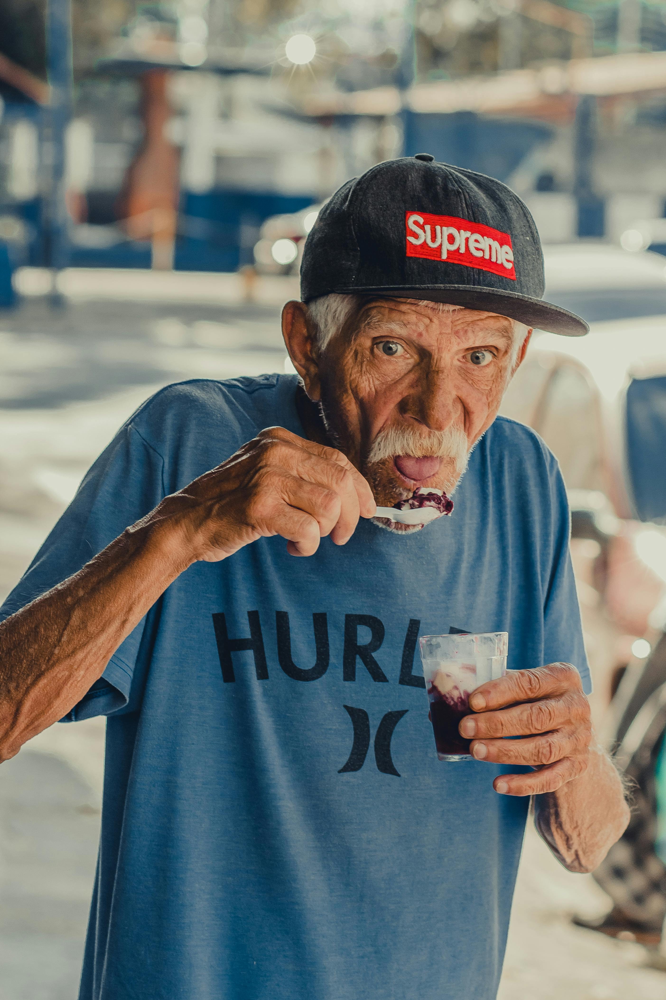

Meet Our Farming Community
These farmers have implemented our technology and witnessed transformative results.

James Wilson
Wheat & Corn Farmer, Iowa
"Before using this app, I was always guessing about the perfect time to plant. Now, I get precise recommendations based on soil conditions and weather patterns. My yield increased by 18% last season!"
Results: 18% yield increase, 22% water savings
Maria Rodriguez
Organic Vegetable Farmer, California
"The pest prediction feature saved my tomato crop last summer. The app alerted me to potential beetle infestations three days before they would have become visible, giving me time to implement organic control measures."
Results: 60% reduction in crop loss, maintained organic certification

Robert Johnson
Cotton Farmer, Texas
"The irrigation recommendations have been a game-changer. By following the app's guidance, I've reduced water usage while maintaining crop quality. My operational costs are down 15%, and that's significant on a farm this size."
Results: 15% reduction in operational costs, 30% water conservation

Sarah Mitchell
Small-Scale Diversified Farmer, Vermont
"As a new farmer, the knowledge base and community features have been invaluable. I can ask questions and get advice from experienced farmers across the country. The crop rotation planner helped me maximize my small acreage."
Results: Successfully introduced 4 new profitable crops, 25% increase in direct-to-consumer sales
Thomas Okonkwo
Rice Farmer, Mississippi
"The market price tracker helped me decide when to sell my harvest. I waited an extra two weeks based on the app's projections and sold at a 12% higher price. The weather warnings also helped me prepare for unexpected rain during harvest."
Results: 12% higher selling price, prevented potential weather damage

Hiroshi Tanaka
Fruit Orchard Owner, Washington
"The frost alert system saved my apple crop last spring. I got notifications in time to deploy frost protection measures, while neighboring orchards suffered significant losses. The ROI on this app was immediate."
Results: Protected 95% of crop during unexpected frost event, streamlined harvest labor scheduling